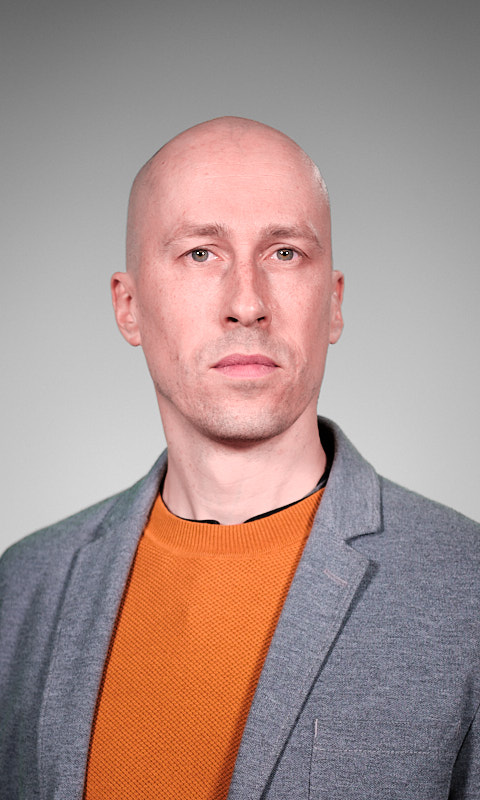

Prototype 01
Le colophon discret
Une signature typographique minimale prolonge le texte sans rivaliser avec le message principal. La ponctuation de code et l’étoile éditoriale différencient les deux gestes.
Fabien Brinjean, M.Éd.
Conseiller technopédagogique en enseignement supérieur, j’accompagne les facultés et le corps enseignant dans la diversification des approches pédagogiques, l’hybridation de l’enseignement ou la préservation de l’intégrité des évaluations.
Face à l’omniprésence de l’IA et à la transition numérique de l’enseignement supérieur, je promeus une adoption réfléchie des technologies…
… pour à la fois relever les défis actuels et préserver les compétences cognitives essentielles.
Codé avec IA
Rédigé sans IA

- Conseiller
- Formateur
- Pédagogue
- Artiste